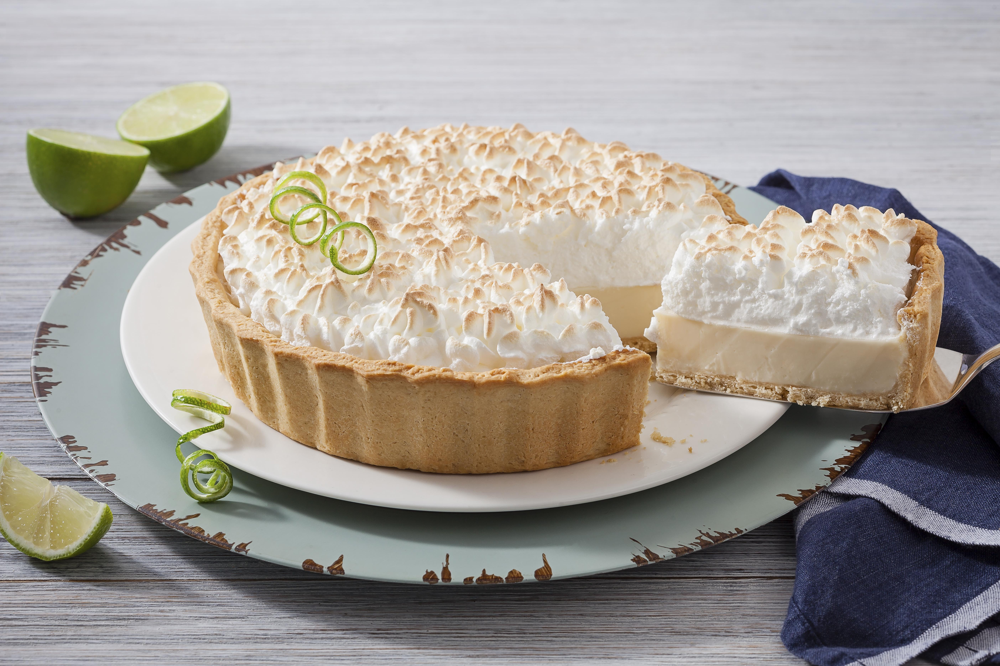

Torta de limão
Tempo de preparo: 30min
Rendimento: 8 porções
Ingredientes
Massa
- 200 g de biscoito de maisena
- 150 g de margarina
Recheio
- 1 lata de leite condensado (395 g)
- 1 caixa de creme de leite (200 g)
- suco de 4 limões
- raspas de 2 limões
Cobertura
- 3 ou 4 claras de ovo
- 3 colheres (sopa) de açúcar
- raspas de 2 limões para decora

Ingredientes
Massa
- 200 g de biscoito de maisena
- 150 g de margarina
Recheio
- 1 lata de leite condensado (395 g)
- 1 caixa de creme de leite (200 g)
- suco de 4 limões
- raspas de 2 limões
Cobertura
- 3 ou 4 claras de ovo
- 3 colheres (sopa) de açúcar
- raspas de 2 limões para decora